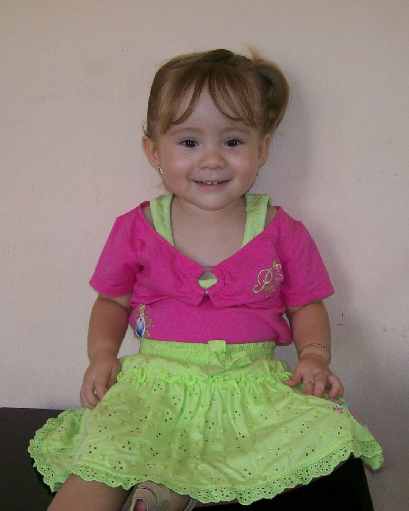
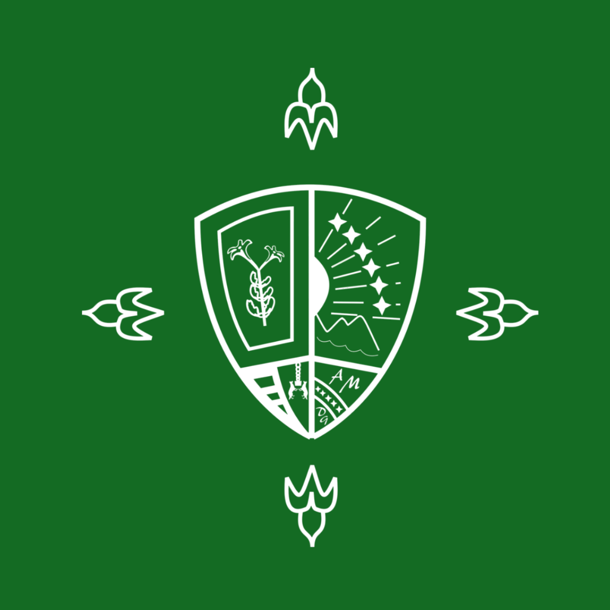
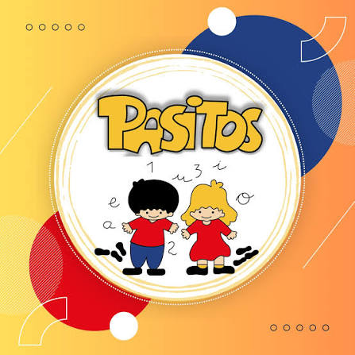

Sobre mí

Nací en septiembre de 2006 en el Hospital Primero de Mayo, en El Salvador. Soy la mayor de tres hermanas, un rol que me ha enseñado a ser empática y dedicada.
Desde pequeña, siempre he tenido una fuerte inclinación hacia el arte y la creatividad. Disfruto expresarme a través de la pintura, las manualidades y el dibujo, actividades que alimentan mi atención al detalle y mi imaginación. En lo personal, me considero una persona tranquila y observadora; aunque suelo ser reservada al principio, a medida que me adapto y entro en confianza con las personas, me resulta fácil conectar y desenvolverme con soltura.
Mi familia
Toda mi familia es proveniente de un cantón de Ahuachapán. Mis padres tomaron la decisión de emigrar a San Salvador en busca de nuevas oportunidades profesionales y personales; mi papá es Ingeniero en Sistemas y mi mamá es licenciada en Ciencias Jurídicas. A pesar de habernos establecido en la capital, la conexión con nuestros orígenes sigue siendo firme, por lo que volvemos a visitar Ahuachapán cada vez que tenemos la oportunidad.
Estudios y formación
Educación superior
Curso el último ciclo de mi segundo año en la Escuela Superior de Economía y Negocios (ESEN), en La Libertad, en la carrera de Ingeniería de Software y Negocios Digitales.
Sitio web
Educación secundaria
Me gradué de Bachiller General en el Colegio Externado de San José en 2024, institución en la que estudié desde 2013.
Sitio web
Educación inicial
Inicié mi formación en el Kínder Pasitos a los 4 años en 2011, graduándome en 2012.
Idiomas
He complementado mis estudios asistiendo a clases de inglés en el Instituto Técnico Ricaldone y en la Escuela Americana.
Deportes
Practiqué natación de forma continua desde 2013 hasta 2019, una disciplina que he retomado recientemente.
Resumen datos
- Nacimiento
- Septiembre 2006, San Salvador
- Nacionalidad
- Salvadoreña
- edad
- 20 años
- Origen Familiar
- Ahuachapán
- Universidad
- ESEN, desde 2024
- Carrera
- Ingeniería de Software y Negocios Digitales
- Colegio
- Externado de San José, 2013–2024
Hobbies
Leer
Es un hábito que me inculcó mi papá desde muy pequeña, ya que al terminar las clases cada año solía comprarme un libro para leer durante las vacaciones.
Pintar
Comenzó como un pasatiempo durante la pandemia, momento en el que descubrí el talento y la facilidad que tenía para esta forma de expresión artística.
Escuchar música
Disfruto de una gran diversidad de géneros, desde bachata, pop y rock en español, hasta indie y salsa. Entre mis favoritos: Rauw Alejandro, LATIN MAFIA y The Weeknd.
Manualidades
Desde que tengo uso de razón, siempre me ha encantado crear con mis propias manos, especialmente detalles especiales para las personas que me importan.
Familia y amigos
Me apasiona compartir tiempo de calidad con mis seres queridos, crear recuerdos significativos y explorar nuevos lugares.
Gastronomía
Disfruto mucho probar distintas propuestas gastronómicas, degustar nuevos sabores y vivir experiencias a través de la comida.